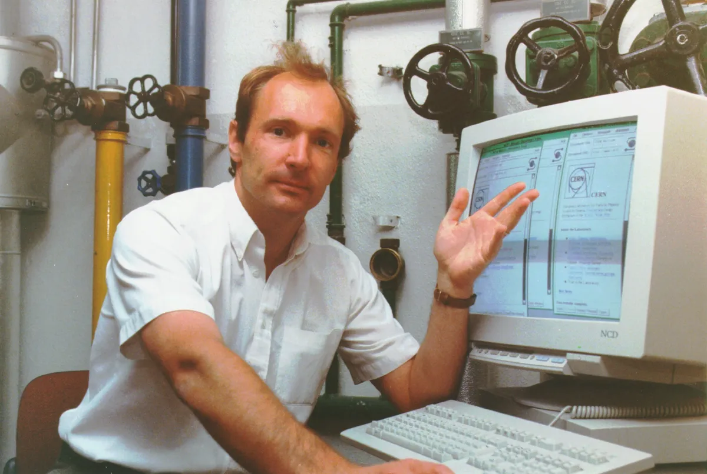

Linha do Tempo da Computação
1936 - Máquina de Turing
Alan Turing concebe a Máquina de Turing, um modelo teórico fundamental para o desenvolvimento de computadores modernos.

1945 - ENIAC
O ENIAC (Electronic Numerical Integrator and Computer) é o primeiro computador eletrônico de grande escala, construído nos Estados Unidos.

1950s - Desenvolvimento de Redes Neurais
Início das pesquisas em redes neurais, um precursor do machine learning.

1960s - ARPANET
O ARPANET é criado, precursor da internet e uma das maiores inovações em redes de computadores.
1970s - Desenvolvimento de Microprocessadores
A Intel lança o primeiro microprocessador, revolucionando a computação pessoal.
1980s - Desenvolvimento da World Wide Web
Tim Berners-Lee propõe e desenvolve a World Wide Web, transformando a maneira como compartilhamos informações.
1990s - Machine Learning
O machine learning se torna uma área de pesquisa importante, impulsionada por avanços em algoritmos e poder computacional.

2000s - Computação Quântica
Início das pesquisas sérias em computação quântica, explorando o uso de princípios quânticos para realizar cálculos.
Atualmente - Avanços em Inteligência Artificial
Avanços significativos em inteligência artificial, incluindo deep learning e redes neurais profundas.